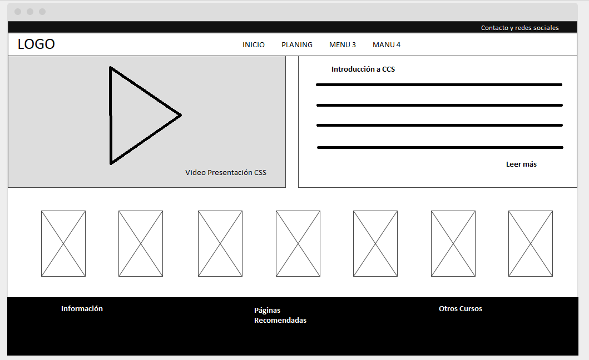

CSS: Estilos Internos y Externos, Selectores CSS
Objetivo General
Este OVI "Objetivo Virtual de Información" de CSS pretende enseñar los estilos
Internos y Externos, además de selectores CSS
Objetivos Específicos
- Formas de aplicar CSS
- Definir estilos CCS en documentos html
- Declaración de estilos CSS externos y llamarlos desde un documento html
Materiales
Para la construcción del sitio se empleará la siguiente maqueta y las siguientes imágenes
Maquetación
